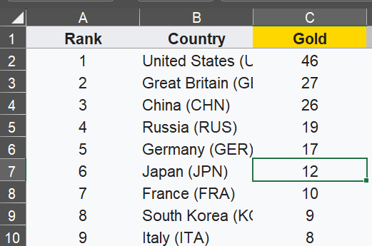
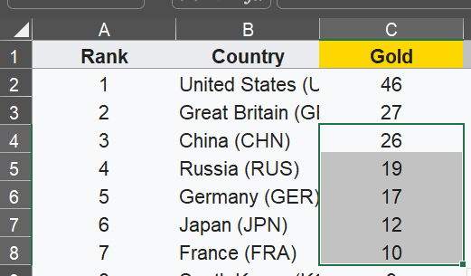
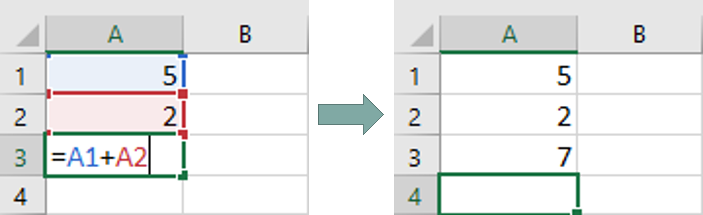
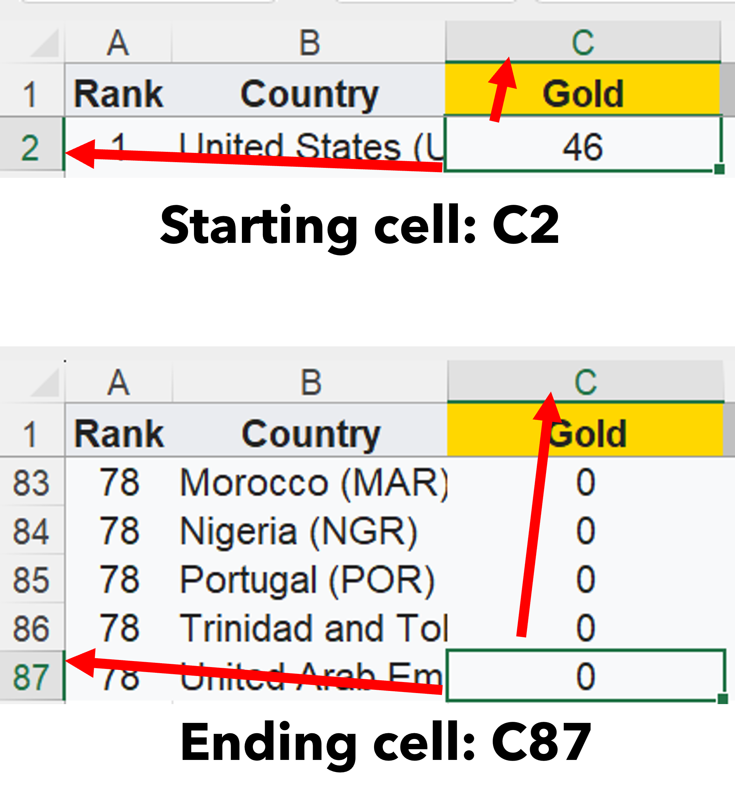
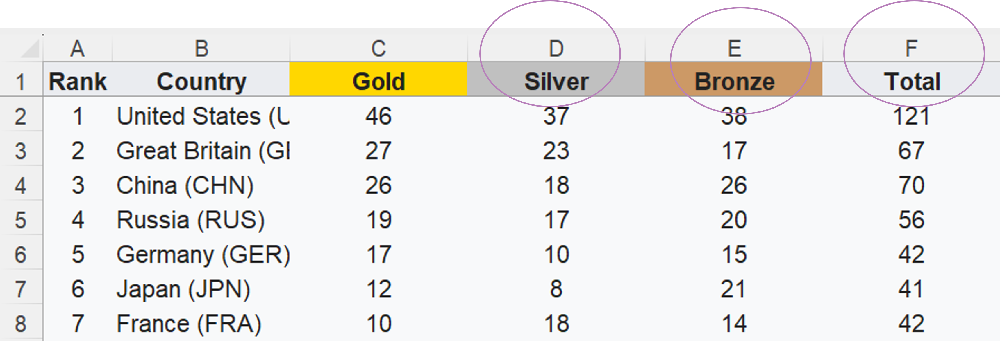

Cell and Cell Range
Before we begin, switch to the sheet named, Analysing the data.
Identifying a Cell
Each cell has a location. Usually, can be referenced starting with the column letters and row number. In the example below, the selected cell is at C7.

Identifying Cell Range
For cell ranges, we referenced the starting cell followed by a colon (:), then the ending cell. In the example on the right, the selected cell range is C4:C8

Cell Referencing
Cell referencing is when we get value from another cell with their cell number. We will use cell referencing to perform data analysis functions.

Determining the cell range
-
In the sheet, Analysing the Data, we are going to write functions where we will need to reference the cell range.
-
Hence, we need to know the cell range for the Gold, Silver, Bronze and Total column.
-
Let's first determine the cell range for the Gold category.
-
We need to know the starting cell, then the ending cell.

-
From the images above, we can determine that:
- C2 is the starting cell
- C87 is the ending cell
-
So, to reference the Gold category, we will reference it as C2:C87.
Quick Question
-
Can you tell what is the cell range for the Silver, Bronze and Total category?
